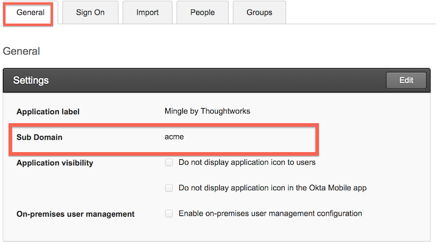
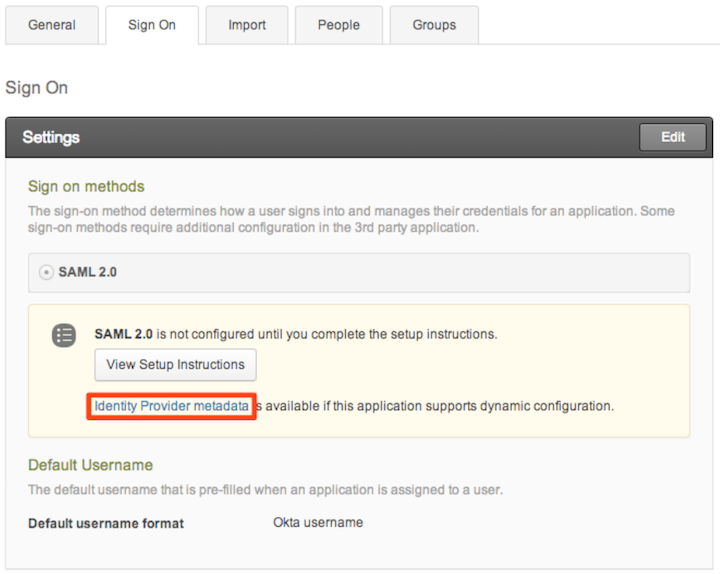
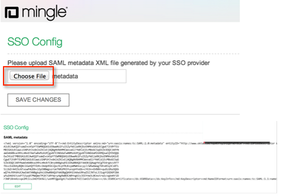

In Okta, on the Sign On tab, download the IdP metadata file by selecting the Identity Provider metadata link, as shown below.

Select Choose File in Mingle, as shown below. Upload the file containing the IdP Metadata you downloaded in step 2. The metadata displays after it is uploaded.

Done!